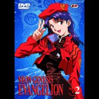

|

"Shin Seiki Evangelion" (1996 - 130m)
SINOPSE
Evangelion foi eleita a melhor serie de animè no Japão em 1996 no Grande Prémio de Anime organizado pela revista japonesa Animage, e em França em 1997 pelos leitores de Animeland.
A qualidade do cenário, o cuidado dedicado à realização (animação, musicas, design), a mistura de esoterismo e de ficção cientifica são uma referencia para todos os amantes de desenhos animados. O estúdio GAINAX (Nadia, Honneamise) apresenta aqui uma serie com um fim surpreendente e controverso. Resumindo: Uma verdadeira serie de culto!
O 2º DVD de uma série de 6 (5 epi. no Vol 1 e 2 e 4 epi. nos Vol. 3, 4, 5 e 6).
O Shinji e a Rei tudo fizeram para eliminar o Anjo que se encontra suspenso no céu de Tokyo-3. A sua coordenação e o seu sangue frio permitirão levar a cabo a estratégia "eléctrica" concebida pela Misato. Será a mesma Misato que terá que subir às costas do novo robot nuclear, que se diz superior ao Eva, e que na sua apresentação formal perdeu perigosamente o controle, pondo todos em grande perigo. Como se isto não chegasse ela terá que se confrontar com o seu passado com a chegada do seu Ex: o Ryoji Kaji, que continua tão convencido e D. Juan como sempre. E já que estamos a falar do Kaji, o que será que ele veio trazer ao Gendo naquela mala?Assim que a Asuka Langley, a "second children", se une à equipa, o Shinji e a Rei entendem que vão ter que aturar o seu egocentrismo e mau génio! Infelizmente para ambos a Asuka e o Shinji são obrigados a trabalhar intensamente em conjunto para atingir a sincronia perfeita dos seus dois Eva num ataque ao Anjo esquizofrénico. Esperemos que mesmo depois de tudo o que fez, a nova recruta possa contar com a ajuda da equipa, para se safar da armadilha de lava, preparada pelo 8º Anjo!
Sinopse
Genesis 06 : REI II / Rei II
O quinto Anjo é muito poderoso, destroi tudo ao seu alcance. Misato tem a ideia de usar o canhão de Positrons, uma arma protótipo que tem que ser disparada a uma distancia mínima do inimigo. O Anjo penetra a zona zero de Tokyo-3 e dirige-se para o QG da Nerv no interior do Geofront tendo como objectivo alcançar o coração do QG! O Shinji vai ter que atacá-lo sob a protecção da Rei com o Eva-00.
Genesis 07 : UM TRABALHO DOS HUMANOS / A Human Work
É só agora que Shinji descobre a verdade sobre o "Second Impact", e a missão da Nerv: impedir um "Third Impact".Mas há organizações independentes a construir armas para competirem com os Eva nesta guerra contra os Anjos. É na apresentação oficial do JÁ (Jet Alone), supostamente superior aos EVA que acontece a desgraça que ameaça matar todos os presentes... Que sorte terem a corajosa Misato por perto...
Genesis 08 : ASUKA, A "THIRD CHILD" / Asuka Strikes!
Misato leva o Shinji a Rei e os amigos a bordo de um couraçado da UN, onde conhecem a "Third Children" Asuka Langley, e o novíssimo EVA-02. Também é a altura de conhecer o Kaji, o ex-namorado da Misato... o que levanta intensas emoções e recordações do passado, destabilizando a nossa heroina. Mas não se podia ficar por aqui.. Um Anjo aparece com o objectivo de apanhar o novo EVA antes que este chegue a Tokyo-3 e é a altura da nova piloto nos mostrar o que vale...
Genesis 09 : DANÇAR PARA VENCER/ Both of You, Dance!
Asuka, com os seus traços europeus, torna-se na rapariga mais popular da escola! (Não conhecem o seu mau feitio e o seu ego inchado!...). o Anjo 7 ataca! Shinji e Asuka são enviados para um ataque sincronizado mas... falham redondamente...! O Anjo dá-lhes 6 dias para treinarem intensivamente o seu ataque ... mas para isso têm que viver juntos e pôr de lado as suas incompatibilidades... será possível?
Genesis 10 : MERGULHAR NO MAGMA/ Magmadiver
Asuka está excitadíssima com a viagem de escola... mas a Misato recusa-lhes a partida! Pode haver novo ataque. Não é altura para férias... Entretanto é descoberto um Anjo em crisálida, uma amostra viva preciosíssima para as investigações da Nerv, e a Misato prepara o plano de captura no mar de lava com o equipamento especial classe D... A missão calha à Asuka que terá que vestir este fato balão! A missão é perigosa e a ONU tem ordens de lançar uma bomba NN no anjo e nos nossos heróis se algo correr mal!
|
VIDEO
Standard 1.33:1 [4:3]
AUDIO
Japonês Dolby Surround
Português Dolby Surround
Francês Dolby Surround
Espanhol Dolby Surround
LEGENDAS
Português
Francês
Espanhol
OPÇÕES ESPECIAIS
Menus Animados
Índice das Cenas
Bónus
DISCOS/LADOS
1 disco de 1 lado
ESTÚDIO
Gainax
NAS
TV Tokyo
Tatsunoko Productions Co. Ltd.
DISTRIBUIÇÃO
Dynamic Portugal, SA
Lusomundo Audiovisuais, SA
|